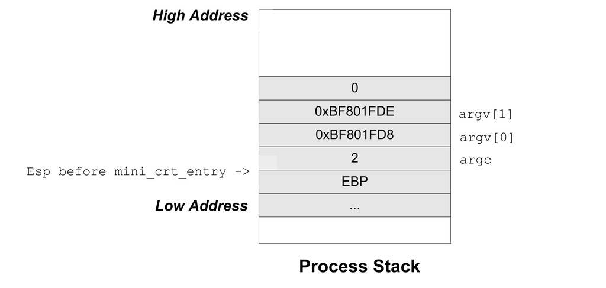

13.1 C語言執行庫
在開始實現Mini CRT之前，首先要對它進行基本的規劃。“麻雀雖小五髒俱全”，雖然Mini CRT很小，但它應該具備CRT的基本功能以及遵循幾個基本設計原則，這些我們歸結為如下幾個方面：
首先Mini CRT應該以ANIS C的標準庫為目標，盡量做到與其介面相一致。
具有自己的入口函式（mini_crt_entry）。
基本的程式相關操作（exit）。
支援堆操作（malloc、free）。
支援基本的檔案操作（fopen、fread、fwrite、fclose、fseek）。
支援基本的字串操作（strcpy、strlen、strcmp）。
支援格式化字串和輸出操作（printf、sprintf）。
支援atexit()函式。
最後，Mini CRT應該是跨平台的。我們計劃讓Mini CRT能夠同時支援Windows和Linux兩個作業系統。
Mini CRT的實現應該盡量簡單，以展示CRT的實現為目的，並不追求功能和效能，基本上是“點到為止”
為了使CRT能夠同時支援Linux和Windows兩個平台，必須針對這兩個作業系統環境的不同進行條件編譯。在Mini CRT中，我們使用宏WIN32為標準來決定是Windows還是Linux。因此實際的程式碼常常呈現這樣的結構：
#ifdef WIN32 //Windows 部分實現代碼 #else //Linux 部分實現代碼 #endif
在本章中，#ifdef–#else–#endif這個條件編譯指令會加粗顯示，以方便讀者區分Windows和Linux的程式碼。
通常我們會把CRT的各個函式的宣告放在不同的標頭檔中，比如IO相關的位於stdio.h；字串和堆相關的放在stdlib.h中。為了簡單起見，將Mini CRT中所有函式的宣告都放在minicrt.h中。
13.1.1 開始
那麼Mini CRT首先該從哪兒入手呢？誠然，從入口函式開始入手應該是個不錯的選擇。在本書的第10章中，已對Glibc和MSVC CRT的入口函式進行了分析，下面我們再對入口函式相關的內容進行概括。
程式執行的最初入口點不是main函式，而是由執行庫為其提供的入口函式。它主要負責三部分工作：準備好程式執行環境及初始化執行庫，呼叫main函式執行程式主體，清理程式執行後的各種資源。
執行庫為所有程式提供的入口函式應該相同，在連結程式時需要指定該入口函式名。
在本章節裡，將為Mini CRT編寫自己的入口函式。為了保證執行庫的相容性，CRT入口函式同樣必須具有以上特性。
入口函式
首先，需要確定入口函式的函式原型，包括函式名、輸入引數及返回值。在這裡，入口函式命名為mini_crt_entry。為了簡單起見，它沒有輸入引數，同時沒有返回值。其實mini_crt_entry的返回值沒有意義，因為它永遠不會返回，在它返回之前就會呼叫程式退出函式結束程式。這樣，入口函式具有如下形式：
void mini_crt_entry(void)
參照上面所描述的入口函式的三部分工作，以下程式碼為一個基本框架。
void mini_crt_entry(void)
{
// 初始化部分
int ret = main()
// 結束部分
exit(ret);
}
這裡的初始化主要負責準備好程式執行的環境，包括準備main函式的引數、初始化執行庫，包括堆、IO等，結束部分主要負責清理程式執行資源。在以下內容中，圍繞這個基本框架，我們將逐步擴充套件補充入口函式。
main引數
我們知道main函式的原型為：
int main(int argc, char* argv[]);
其中argc和argv分別是main函式的兩個引數，它們分別表示執行程式時的引數個數和指向引數的字串指標陣列。在第6章中已經介紹過在Linux系統下，當程式被初始化時，它的堆疊結構中就儲存著環境變數和傳遞給main函式的引數，我們可以透過ESP暫存器獲得這兩個引數。但是一旦進入mini_crt_entry之後，ESP暫存器會隨著函式的執行而被改變，透過第9章中關於函式對於堆疊幀的知識，可以知道EBP的內容就是進入函式後ESP + 4（4是因為函式第一條指令是push ebp）。那麼可以推斷出EBP – 4所指向的內容應該就是argc，而EBP – 8則就是argv。整個堆疊的分佈可以如圖13-1所示。

對於Windows系統來說，它提供了相應的API用於取得程式的命令列引數，這個API叫做GetCommandLine，它會返回整個命令列引數字串。由於main函式所需要的引數是命令列引數列表，所以我們將整個命令列字串分割成若幹個引數，以符合argc和argv的格式。
在這裡暫時不列出實現的程式碼，在章節的最後將列出這一節所實現的Mini CRT原始碼。以後所有與Mini CRT實現相關的章節都遵循這一規則。
CRT初始化
完成了獲取main 函式引數的程式碼後，還應該在入口函式裡對CRT進行初始化。由於Mini CRT所實現的功能較少，所以初始化部分十分簡單。需要初始化的主要是堆和IO部分。在堆被初始化之前，malloc/free函式是沒有辦法使用的。我們定義堆的初始化函式為mini_crt_heap_init()；IO部分的初始化函式為mini_crt_io_init()。這兩個函式的返回值都是整數型別的，返回非0即表示初始化成功，否則表示失敗。這兩個函式的實現將在後面介紹堆實現和IO實現時詳細介紹。
結束部分
Mini CRT結束部分很簡單，它要完成兩項任務：一個就是呼叫由atexit()註冊的退出回撥函式；另外一個就是實現結束程式。這兩項任務都由exit()函式完成，這個函式在Linux的實現已經在第4章中碰到過了，它呼叫Linux的1號系統呼叫實現程式結束，ebx表示程式退出碼；而Windows則提供了一個叫做ExitProcess的API，直接呼叫該API即可結束程式。
不過在進行系統呼叫或API之前，exit()還有一個任務就是呼叫由atexit()註冊的退出回撥函式，這個任務透過呼叫mini_crt_exit_routine()實現。我們在第10章中已經瞭解到，atexit()註冊回撥函式的機制主要是用來實現全域性物件的析構的，在這一節中暫時不打算讓Mini CRT支援C++，所以暫時將呼叫mini_crt_exit_routine()這個函式的那行程式碼去掉。
最終Mini CRT的入口函式mini_crt_entry的程式碼如清單13-1所示。
清單13-1 entry.c
//entry.c
#include "minicrt.h"
#ifdef WIN32
#include <Windows.h>
#endif
extern int main(int argc, char* argv[]);
void exit(int);
static void crt_fatal_error(const char* msg)
{
// printf("fatal error: %s", msg);
exit(1);
}
void mini_crt_entry(void)
{
int ret;
#ifdef WIN32
int flag = 0;
int argc = 0;
char* argv[16]; // 最多16個參數
char* cl = GetCommandLineA();
// 解析命令行
argv[0] = cl;
argc++;
while(*cl) {
if(*cl == '\"')
if(flag == 0) flag = 1;
else flag = 0;
else if(*cl == ' ' && flag == 0) {
if(*(cl+1)) {
argv[argc] = cl + 1;
argc++;
}
*cl = '\0';
}
cl++;
}
#else
int argc;
char** argv;
char* ebp_reg = 0;
// ebp_reg = %ebp
asm("movl %%ebp,%0 \n":"=r"(ebp_reg));
argc = *(int*)(ebp_reg + 4);
argv = (char**)(ebp_reg + 8);
#endif
if (!mini_crt_heap_init())
crt_fatal_error("heap initialize failed");
if (!mini_crt_io_init())
crt_fatal_error("IO initialize failed");
ret = main(argc,argv);
exit(ret);
}
void exit(int exitCode)
{
//mini_crt_call_exit_routine();
#ifdef WIN32
ExitProcess(exitCode);
#else
asm( "movl %0,%%ebx \n\t"
"movl $1,%%eax \n\t"
"int $0x80 \n\t"
"hlt \n\t"::"m"(exitCode));
#endif
}
在上面這個實現中，Mini CRT的入口函式基本完成所需要的功能。它的Windows版對命令列引數進行了分割，這個分割演算法實際上還是有問題的，比如兩個引數之間隔多個空格就會發生問題。當然這些問題不影響我們理解Mini CRT的入口函式的主幹部分。
13.1.2 堆的實現
有了CRT的入口函式、exit()函式之後，下一步的目標就是實現堆的操作，即malloc()函式和free()函式。當然堆的實現方法有很多，在不同的作業系統平台上也有很多可以選擇的方案，在遵循Mini CRT的原則下，我們將Mini CRT堆的實現歸納為下面幾條。
實現一個以空閑連結串列演算法為基礎的堆空間分配演算法。
為了簡單起見，堆空間大小固定為32MB，初始化之後空間不再擴充套件或縮小。
在Windows平台下不使用HeapAlloc等堆分配演算法，採用VirtualAlloc向系統直接申請32MB空間，由我們自己的堆分配演算法實現malloc。
在Linux平台下，使用brk將資料段結束地址向後調整32MB，將這塊空間作為堆空間。
brk系統呼叫可以設定程式的資料段邊界，而sbrk可以移動程式的資料段邊界。顯然，如果將資料段邊界後移，就相當於分配了一定量的記憶體。
由brk/sbrk分配的記憶體和VirtualAlloc分配的一樣，它們僅僅是分配了虛擬空間，這些空間一開始是不會提交的（即不分配物理頁面），當程式試圖訪問某一個地址的時候，作業系統會檢測到訪問異常，並且為被訪問的地址所在的頁分配物理頁面。
在某些人的“黑話”裡，踐踏（trample）一塊記憶體指的是去讀寫這塊記憶體的每一個位元組。brk所分配的虛地址就是需要在踐踏之後才會被作業系統自動地分配實際頁面。所以很多時候按頁需求分配（Page Demand Allocation）又被稱為按踐踏分配（Alloc On Trample， AOT）。
我們在第9章時已經介紹過堆分配演算法的原理，在實現上也基本一致。整個堆空間按照是否被佔用而被分割成了若幹個空閑（Free）塊和佔用（Used）塊，它們之間由雙向連結串列連結起來。
當使用者要申請一塊記憶體時，堆分配演算法將遍曆整個連結串列，直到找到一塊足夠大的空閑塊，如果這個空閑塊大小剛好等於所申請的大小，那麼直接將這個空閑塊標記為佔用塊，然後將它的地址返回給使用者；如果空閑塊大小大於所申請的大小，那麼這個空閑塊將被分割成兩塊，其中一塊大小為申請的大小，標記為佔用，另外一塊為空閑塊。
當使用者釋放某一塊空間時，堆分配演算法會判別被釋放塊前後兩個塊是否為空閑塊，如果是，則將它們合並成一個大的空閑塊。
整個堆分配演算法從實現上看十分簡單，僅僅只有100行左右，而且還包含了Linux的brk系統呼叫的實現。Mini CRT的堆分配演算法原始碼如清單13-2所示。
清單13-2 malloc.c
// malloc.c
#include "minicrt.h"
typedef struct _heap_header
{
enum {
HEAP_BLOCK_FREE = 0xABABABAB, // magic number of free block
HEAP_BLOCK_USED = 0xCDCDCDCD, // magic number of used block
} type; // block type FREE/USED
unsigned size; // block size including header
struct _heap_header* next;
struct _heap_header* prev;
} heap_header;
#define ADDR_ADD(a,o) (((char*)(a)) + o)
#define HEADER_SIZE (sizeof(heap_header))
static heap_header* list_head = NULL;
void free(void* ptr)
{
heap_header* header = (heap_header*)ADDR_ADD(ptr, -HEADER_SIZE);
if(header->type != HEAP_BLOCK_USED)
return;
header->type = HEAP_BLOCK_FREE;
if(header->prev != NULL && header->prev->type == HEAP_BLOCK_FREE) {
// merge
header->prev->next = header->next;
if(header->next != NULL)
header->next->prev = header->prev;
header->prev->size += header->size;
header = header->prev;
}
if(header->next != NULL && header->next->type == HEAP_BLOCK_FREE) {
// merge
header->size += header->next->size;
header->next = header->next->next;
}
}
void* malloc( unsigned size )
{
heap_header *header;
if( size == 0 )
return NULL;
header = list_head;
while(header != 0) {
if(header->type == HEAP_BLOCK_USED) {
header = header->next;
continue;
}
if(header->size > size + HEADER_SIZE &&
header->size <= size + HEADER_SIZE * 2) {
header->type = HEAP_BLOCK_USED;
}
if(header->size > size + HEADER_SIZE * 2) {
// split
heap_header* next = (heap_header*)ADDR_ADD(header,size +
HEADER_SIZE);
next->prev = header;
next->next = header->next;
next->type = HEAP_BLOCK_FREE;
next->size = header->size - (size - HEADER_SIZE);
header->next = next;
header->size = size + HEADER_SIZE;
header->type = HEAP_BLOCK_USED;
return ADDR_ADD(header,HEADER_SIZE);
}
header = header->next;
}
return NULL;
}
#ifndef WIN32
// Linux brk system call
static int brk(void* end_data_segment) {
int ret = 0;
// brk system call number: 45
// in /usr/include/asm-i386/unistd.h:
// #define __NR_brk 45
asm( "movl $45, %%eax \n\t"
"movl %1, %%ebx \n\t"
"int $0x80 \n\t"
"movl %%eax, %0 \n\t"
: "=r"(ret): "m"(end_data_segment) );
}
#endif
#ifdef WIN32
#include <Windows.h>
#endif
int mini_crt_heap_init()
{
void* base = NULL;
heap_header *header = NULL;
// 32 MB heap size
unsigned heap_size = 1024 * 1024 * 32;
#ifdef WIN32
base = VirtualAlloc(0,heap_size,MEM_COMMIT | MEM_RESERVE,PAGE_READWRITE);
if(base == NULL)
return 0;
#else
base = (void*)brk(0);
void* end = ADDR_ADD(base, heap_size);
end = (void*)brk(end);
if(!end)
return 0;
#endif
header = (heap_header*)base;
header->size = heap_size;
header->type = HEAP_BLOCK_FREE;
header->next = NULL;
header->prev = NULL;
list_head = header;
return 1;
}
我們在malloc.c中實現了3個對外的介面函式，分別是：mini_crt_init_heap、malloc和free。不過這個堆的實現還比較簡陋：它的搜尋演算法是O(n)的（n是堆中分配的塊的數量）；堆的空間固定為32MB，沒有辦法擴張；它沒有實現realloc、calloc函式；它沒有很好的堆溢位防範機制；它不支援多執行緒同時訪問等等。
雖然它很簡陋，但是它體現出了堆分配演算法的最本質的幾個特徵，其他的諸如改進搜尋速度、擴充套件堆空間、多執行緒支援等都可以在此基礎上進行改進，由於篇幅有限，我們也不打算一一實現它們，讀者如果有興趣，可以自己考慮動手改進Mini CRT，為它增加上述特性。
13.1.3 IO與檔案操作
在為Mini CRT新增了malloc和free之後，接著將為它們實現IO操作。IO部分在任何軟體中都是最為複雜的，在CRT中也不例外。在傳統的C語言和UNIX裡面，IO和檔案是同一個概念，所有的IO都是透過對檔案的操作來實現的。因此，只要實現了檔案的基本操作（fopen、fread、fwrite、fclose和fseek），即使完成了Mini CRT的IO部分。與堆的實現一樣，我們需要為Mini CRT的IO部分設計一些實現的基本原則：
僅實現基本的檔案操作，包括fopen、fread、fwrite、fclose及fseek。
為了簡單起見，不實現緩衝（Buffer）機制。
不對Windows下的換行機制進行轉換，即“\r\n”與“\n”之間不進行轉換。
支援三個標準的輸入輸出stdin、stdout和stderr。
在Windows下，檔案基本操作可以使用API：CreateFile、ReadFile、WriteFile、CloseHandle和SetFilePointer實現。
Linux不像Windows那樣有API介面，我們必須使用內嵌組譯實現open、read、write、close和seek這幾個系統呼叫。
fopen時僅區分“r”、“w”和“+”這幾種模式及它們的組合，不對文字模式和二進位模式進行區分，不支援追加模式（“a”）。
Mini CRT的IO部分實現原始碼如清單13-3所示。
清單13-3 stdio.c
// stdio.c
#include "minicrt.h"
int mini_crt_io_init()
{
return 1;
}
#ifdef WIN32
#include <Windows.h>
FILE* fopen( const char *filename,const char *mode )
{
HANDLE hFile = 0;
int access = 0;
int creation = 0;
if(strcmp(mode, "w") == 0) {
access |= GENERIC_WRITE;
creation |= CREATE_ALWAYS;
}
if(strcmp(mode, "w+") == 0) {
access |= GENERIC_WRITE | GENERIC_READ;
creation |= CREATE_ALWAYS;
}
if(strcmp(mode, "r") == 0) {
access |= GENERIC_READ;
creation += OPEN_EXISTING;
}
if(strcmp(mode, "r+") == 0) {
access |= GENERIC_WRITE | GENERIC_READ;
creation |= TRUNCATE_EXISTING;
}
hFile = CreateFileA(filename, access, 0, 0, creation, 0, 0);
if (hFile == INVALID_HANDLE_VALUE)
return 0;
return (FILE*)hFile;
}
int fread(void* buffer, int size, int count, FILE *stream)
{
int read = 0;
if (!ReadFile( (HANDLE)stream, buffer, size * count, &read, 0))
return 0;
return read;
}
int fwrite(const void* buffer, int size, int count, FILE *stream)
{
int written = 0;
if (!WriteFile( (HANDLE)stream, buffer, size * count, &written, 0))
return 0;
return written;
}
int fclose(FILE* fp)
{
return CloseHandle((HANDLE)fp);
}
int fseek(FILE* fp, int offset, int set)
{
return SetFilePointer((HANDLE)fp, offset, 0, set);
}
#else // #ifdef WIN32
static int open(const char *pathname, int flags, int mode)
{
int fd = 0;
asm("movl $5,%%eax \n\t"
"movl %1,%%ebx \n\t"
"movl %2,%%ecx \n\t"
"movl %3,%%edx \n\t"
"int $0x80 \n\t"
"movl %%eax,%0 \n\t":
"=m"(fd):"m"(pathname),"m"(flags),"m"(mode));
}
static int read( int fd, void* buffer, unsigned size)
{
int ret = 0;
asm("movl $3,%%eax \n\t"
"movl %1,%%ebx \n\t"
"movl %2,%%ecx \n\t"
"movl %3,%%edx \n\t"
"int $0x80 \n\t"
"movl %%eax,%0 \n\t":
"=m"(ret):"m"(fd),"m"(buffer),"m"(size));
return ret;
}
static int write( int fd, const void* buffer, unsigned size)
{
int ret = 0;
asm("movl $4,%%eax \n\t"
"movl %1,%%ebx \n\t"
"movl %2,%%ecx \n\t"
"movl %3,%%edx \n\t"
"int $0x80 \n\t"
"movl %%eax,%0 \n\t":
"=m"(ret):"m"(fd),"m"(buffer),"m"(size));
return ret;
}
static int close(int fd)
{
int ret = 0;
asm("movl $6,%%eax \n\t"
"movl %1,%%ebx \n\t"
"int $0x80 \n\t"
"movl %%eax,%0 \n\t":
"=m"(ret):"m"(fd));
return ret;
}
static int seek(int fd, int offset, int mode)
{
int ret = 0;
asm("movl $19,%%eax \n\t"
"movl %1,%%ebx \n\t"
"movl %2,%%ecx \n\t"
"movl %3,%%edx \n\t"
"int $0x80 \n\t"
"movl %%eax,%0 \n\t":
"=m"(ret):"m"(fd),"m"(offset),"m"(mode));
return ret;
}
FILE *fopen( const char *filename,const char *mode )
{
int fd = -1;
int flags = 0;
int access = 00700; // 創建文件的權限
// 來自於/usr/include/bits/fcntl.h
// 注意：以0開始的數字是八進製的
#define O_RDONLY 00
#define O_WRONLY 01
#define O_RDWR 02
#define O_CREAT 0100
#define O_TRUNC 01000
#define O_APPEND 02000
if(strcmp(mode, "w") == 0)
flags |= O_WRONLY | O_CREAT | O_TRUNC;
if(strcmp(mode, "w+") == 0)
flags |= O_RDWR | O_CREAT | O_TRUNC;
if(strcmp(mode, "r") == 0)
flags |= O_RDONLY;
if(strcmp(mode, "r+") == 0)
flags |= O_RDWR | O_CREAT;
fd = open(filename, flags, access);
return (FILE*)fd;
}
int fread(void* buffer, int size, int count, FILE* stream)
{
return read((int)stream, buffer, size * count);
}
int fwrite(const void* buffer, int size, int count, FILE* stream)
{
return write((int)stream, buffer, size * count);
}
int fclose(FILE* fp)
{
return close((int)fp);
}
int fseek(FILE* fp, int offset, int set)
{
return seek((int)fp, offset, set);
}
#endif
在上面的Mini CRT IO與檔案操作的實現中，我們省略了現實CRT中很多內容，包括換行符轉換、檔案緩衝等。由於省略了這些內容，那麼Mini CRT相當於僅僅是對系統呼叫或Windows API的一個簡單包裝，而FILE結構也可以被省略，它在Mini CRT中是被忽略的，FILE*這個型別在Windows下實際上是核心控制代碼，而在Linux下則是檔案描述符，它並不是指向FILE結構的地址。
值得一提的是，在Windows下，標準輸入輸出並不是檔案描述符0、1和2，而是要透過一個叫做GetStdHandle的API獲得。
值得一提的是，在Windows下，標準輸入輸出並不是檔案描述符0、1和2，而是要透過一個叫做GetStdHandle的API獲得。
由於省略了諸多實現內容，所以CRT IO部分甚至可以不要做任何初始化，於是IO的初始化函式mini_crt_init_io也形同虛設，僅僅是一個空函式而已。
13.1.4 字串相關操作
字串相關的操作也是CRT的一部分，包括計算字串長度、比較兩個字串、整數與字串之間的轉換等。由於這部分功能無須涉及任何與核心互動，是純粹的使用者態的計算，所以它們的實現相對比較簡單。我們在Mini CRT中將實現與如清單13-4幾個字串相關的操作。
清單13-4 string.c
char* itoa(int n, char* str, int radix)
{
char digit[] = "0123456789ABCDEFGHIJKLMNOPQRSTUVWXYZ";
char* p = str;
char* head = str;
if (!p || radix < 2 || radix > 36)
return p;
if (radix != 10 && n < 0)
return p;
if (n == 0)
{
*p++ = '0';
*p = 0;
return p;
}
if (radix == 10 && n < 0)
{
*p++ = '-';
n = -n;
}
while (n)
{
*p++ = digit[n % radix];
n /= radix;
}
*p = 0;
for (--p; head < p; ++head, --p)
{
char temp = *head;
*head = *p;
*p = temp;
}
return str;
}
int strcmp (const char * src, const char * dst)
{
int ret = 0 ;
unsigned char* p1 = (unsigned char*)src;
unsigned char* p2 = (unsigned char*)dst;
while( ! (ret = *p1 - *p2) && *p2)
++p1, ++p2;
if ( ret < 0 )
ret = -1 ;
else if ( ret > 0 )
ret = 1 ;
return( ret );
}
char *strcpy(char *dest, const char *src)
{
char* ret = dest;
while (*src)
*dest++ = *src++;
*dest = '\0';
return ret;
}
unsigned strlen(const char *str)
{
int cnt = 0;
if (!str)
return 0;
for (; *str != '\0'; ++str)
++cnt;
return cnt;
}
13.1.5 格式化字串
現在的Mini CRT已經初具雛形了，它擁有了堆管理、檔案操作、基本字串操作。接下來將要實現的是CRT中一個如雷貫耳的函式，那就是printf。printf是一個典型的變長引數函式，即引數數量不確定，如何使用和實現變長引數的函式在第10章中已介紹過。與前面一樣，我們將這一節要實現的相關內容列舉如下。
printf實現僅支援%d、%s，且不支援格式控制（比如%08d）。
實現fprintf和vfprintf，實際上printf是fprintf的特殊形式，即目的檔為標準輸出的fprintf。
實現與檔案字串操作相關的幾個函式，fputc和fputs。
printf相關的實現程式碼如清單13-5所示。
清單13-5
#include "minicrt.h"
int fputc(int c,FILE *stream )
{
if (fwrite(&c, 1, 1, stream) != 1)
return EOF;
else
return c;
}
int fputs( const char *str, FILE *stream)
{
int len = strlen(str);
if (fwrite(str, 1, len, stream) != len)
return EOF;
else
return len;
}
#ifndef WIN32
#define va_list char*
#define va_start(ap,arg) (ap=(va_list)&arg+sizeof(arg))
#define va_arg(ap,t) (*(t*)((ap+=sizeof(t))-sizeof(t)))
#define va_end(ap) (ap=(va_list)0)
#else
#include <Windows.h>
#endif
int vfprintf(FILE *stream, const char *format, va_list arglist)
{
int translating = 0;
int ret = 0;
const char* p = 0;
for (p = format; *p != '\0'; ++p)
{
switch (*p)
{
case '%':
if (!translating)
translating = 1;
else
{
if (fputc('%', stream) < 0)
return EOF;
++ret;
translating = 0;
}
break;
case 'd':
if (translating) //%d
{
char buf[16];
translating = 0;
itoa(va_arg(arglist, int), buf, 10);
if (fputs(buf, stream) < 0)
return EOF;
ret += strlen(buf);
}
else if (fputc('d', stream) < 0)
return EOF;
else
++ret;
break;
case 's':
if (translating) //%s
{
const char* str = va_arg(arglist, const char*);
translating = 0;
if (fputs(str, stream) < 0)
return EOF;
ret += strlen(str);
}
else if (fputc('s', stream) < 0)
return EOF;
else
++ret;
break;
default:
if (translating)
translating = 0;
if (fputc(*p, stream) < 0)
return EOF;
else
++ret;
break;
}
}
return ret;
}
int printf (const char *format, ...)
{
va_list(arglist);
va_start(arglist, format);
return vfprintf(stdout, format, arglist);
}
int fprintf (FILE *stream, const char *format, ...)
{
va_list(arglist);
va_start(arglist, format);
return vfprintf(stream, format, arglist);
}
可以看到vfprintf是這些函式中真正實現字串格式化的函式，實現它的主要複雜性來源於對格式化字串的分析。在這裡使用了一種簡單的演算法：
（1）定義模式：翻譯模式/普通模式。
（2）迴圈整個格式字串。
a) 如果遇到%。
i. 普通模式：進入翻譯模式；
ii. 翻譯模式：輸出%，退出翻譯模式。
b) 如果遇到%後面允許出現的特殊字元（如d和s）。
i. 翻譯模式：從不定引數中取出一個引數輸出，退出翻譯模式；
ii. 普通模式：直接輸出該字元。
c) 如果遇到其他字元：無條件退出翻譯模式並輸出字元。
在Mini CRT的vfprintf實現中，並不支援特殊的格式控制符，例如位數、進度控制等，僅支援%d與%s這樣的簡單轉換。真正的vfprintf格式化字串實現比較複雜，因為它支援諸如“%f”、“%x”已有各種格式、位數、精度控制等，在這裡並沒有將它們一一實現，也沒有這個必要，Mini CRT的printf已經能夠充分展示printf的實現原理和它的關鍵技巧，讀者也可以根據Mini CRT printf的實現去更加深入地分析Glibc或MSVC CRT的相關程式碼。